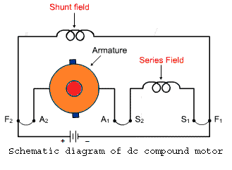
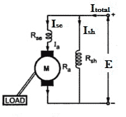
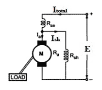
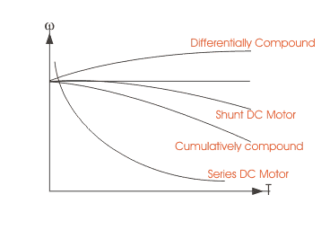

• Long Shunt
• Voltage and Current Equation
Short Shunt Compound Wound DC Motor
• Voltage and Current Equation
Cumulative Compounding of DC Motor
Differential Compounding of DC Motor
A compound wound dc motor or rather a dc compound motor falls under the category of self excited motors, and is made up of both series the field coils S1 S2 and shunt field coils F1 F2 connected to the armature winding as shown in the figure below.
Both the field coils provide for the required amount of magnetic flux, that links with the armature coil and brings about the torque necessary to facilitate rotation at desired speed.
As we can understand, a compound wound dc motor is basically formed by the amalgamation of a shunt wound dc motor and series wound dc motor to achieve the better off properties of both these types. Like a shunt wound dc motor is bestowed with an extremely efficient speed regulation characteristic, whereas the dc series motor has high starting torque.

So the compound wound dc motor reaches a compromise in terms of both this features and has a good combination of proper speed regulation and high starting toque. Though its staring torque is not as high as in case of dc motor, nor is its speed regulation as good as a shunt dc motor. Overall characteristics of dc shunt motor falls somewhere in between these 2 extreme limits.
Types of Compound Wound DC Motor
The compound wound dc motor can further be subdivided into 2 major types on the basis of its field winding connection with respect to the armature winding, and they are:
Long Shunt Compound Wound DC Motor
In case of long shunt compound wound dc motor, the shunt field winding is connected in parallel across the series combination of both the armature and series field coil, as shown in the diagram below.

Voltage and Current Equation of Long Shunt Compound Wound DC Motor
Let E and Itotal be the total supply voltage and electric current supplied to the input terminals of the motor. And Ia , Ise , Ish be the values of electric current flowing through armature resistance Ra, series winding resistance Rse and shunt winding resistance Rsh respectively.
Now we know in shunt motor, Itotal = Ia + Ish
And in series motor Ia = Ise
Therefore, the electric current equation of a compound wound dc motor is given by
And its voltage equation is,
Short Shunt Compound Wound DC Motor
In case of short shunt compound wound dc motor, the shunt field winding is connected in parallel across the armature winding only. And series field coil is exposed to the entire supply current, before being split up into armature and shunt field electric current as shown in the diagram below.

Voltage and Current Equation of Short Shunt Compound Wound DC Motor
Here also let, E and Itotal be the total supply voltage and electric current supplied to the input terminals of the motor. And Ia , Ise , Ish be the values of electric current flowing through armature resistance Ra , series winding resistance Rse and shunt winding resistance Rsh respectively.
But from the diagram above we can see,
Since the entire supply electric current flows through the series field winding.
And like in the case of a dc shunt motor,
Equation (2) and (3) gives the electric current equation of a short shunt compound wound dc motor.
Now for equating the voltage equation, we apply Kirchoff’s law to the circuit and get,
But since Ise = Itotal
Thus the final voltage equation can be written as,
Cumulative Compounding of DC Motor
A compound wound dc motor is said to be cumulatively compounded when the shunt field flux produced by the shunt winding assists or enhances the effect of main field flux, produced by the series winding.
Differential Compounding of DC Motor
Similarly a compound wound dc motor is said to be differentially compounded when the flux due to the shunt field winding diminishes the effect of the main series winding. This particular trait is not really desirable, and hence does not find much of a practical application.

The net flux produced in this case is lesser than the original flux and hence does not find much of a practical application.
The compounding characteristic of the self excited dc motor is shown in the figure below.

 by
by